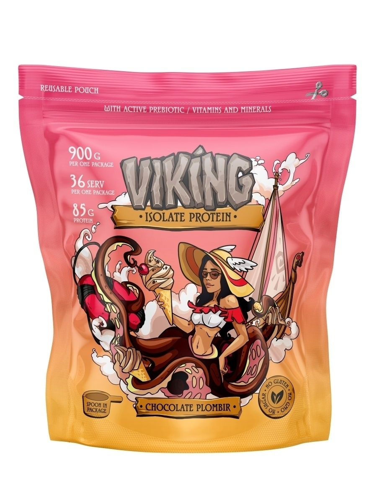

Белковый коктейль Nott Protein со вкусом клубники 900гр
1600₽
Этот протеин применим в любой спортивной программе: для мышечного тонуса, набора массы, в программе восстановления, а благодаря своей низкокалорийности - и для похудения. Не содержит глютена и ГМО. Все коктейли производятся без добавления сахара, вместо него в качестве подсластителя используется сукралоза, данный подсластитель высоко оценивается в спортивной индустриии, т.к. не содержит калориии и остается низкоуглеводным.
Learn more

Протеин Nott Standard 100% 907гр - Двойной богатый шоколад
4175₽
Протеин - это натуральный продукт, содержащий чистый белок. Белки являются основным строительным материалом организма, протеин поможет восполнить необходимое количество белка в организме. 100% Nott Standard - это удобный и своевременный вариант полезного перекуса как для спортсмена, так и для любого человека, ведущего активный образ жизни.Важно знать: продукт содержит специальные пищеварительные ферменты для лучшего усвоения сывороточного белка, отлично подходит людям, которым не рекомендуются продукты с лактозой.
Learn more
Протеин BIG Nott, вкус Мороженое, 900гр
1666₽
РЕКОМЕНДАЦИИ ПО ПРИМЕНЕНИЮ:Смешайте один мерный черпак без горки с 300 - 350 мл воды или молока. Для наилучшего результата принимайте:В тренировочные дни: одну порцию утром, вторую за час перед тренировкой, третью - сразу после тренировкиВ дни отдыха: принимайте 2-3 раза в день, между основными приемами пищиНе содержит соевый белок, сахар, красители и глютен
Learn more

Протеин King Nott для похудения без сахара, спортивное питание (коктейль пломбир) 900гр
1400₽
Изолят сывороточного белка в форме выпуска протеиновый коктейль без сахара - один из лучших источников протеина, рекомендуемый для похудения. Белковый коктейль создается на основе сыворотки, отделяемой при производстве сыра. Протеин добывается из многих продуктов. Но лишь сывороточный белковый коктейль для похудения содержит максимум аминокислот BCAA, выступающих главным строительным компонентом мышечной ткани.
Learn more